Plotting distributions (ggplot2)
Table of contents
Problem
You want to plot a distribution of data.
Solution
This sample data will be used for the examples below:
set.seed(1234) df <- data.frame(cond = factor( rep(c("A","B"), each=200) ), rating = c(rnorm(200),rnorm(200, mean=.8))) # cond rating # A -1.2070657 # A 0.2774292 # A 1.0844412 # ... # B 1.3388331 # B 0.8146431 # B -0.1164891 library(ggplot2)
Histogram and density plots
The qplot function is supposed make the same graphs as ggplot, but with a simpler syntax. However, in practice, it's often easier to just use ggplot because the options for qplot can be more confusing to use.
# Basic histogram from the vector "rating". Each bin is .5 wide. # These both do the same thing: qplot(df$rating, binwidth=.5) ggplot(df, aes(x=rating)) + geom_histogram(binwidth=.5) # Draw with black outline, white fill ggplot(df, aes(x=rating)) + geom_histogram(binwidth=.5, colour="black", fill="white") # Density curve ggplot(df, aes(x=rating)) + geom_density() # Histogram overlaid with kernel density curve ggplot(df, aes(x=rating)) + geom_histogram(aes(y=..density..), # Histogram with density instead of count on y-axis binwidth=.5, colour="black", fill="white") + geom_density(alpha=.2, fill="#FF6666") # Overlay with transparent density plot
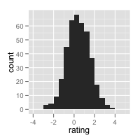 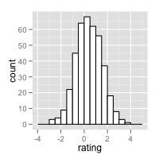 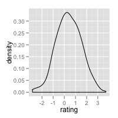 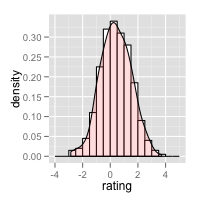
Add a line for the mean:
ggplot(df, aes(x=rating)) + geom_histogram(binwidth=.5, colour="black", fill="white") + geom_vline(aes(xintercept=mean(rating, na.rm=T)), # Ignore NA values for mean color="red", linetype="dashed", size=1)
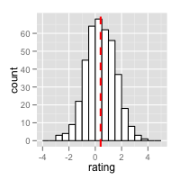
Histogram and density plots with multiple groups
# Overlaid histograms ggplot(df, aes(x=rating, fill=cond)) + geom_histogram(binwidth=.5, alpha=.5, position="identity") # Interleaved histograms ggplot(df, aes(x=rating, fill=cond)) + geom_histogram(binwidth=.5, position="dodge") # Density plots ggplot(df, aes(x=rating, colour=cond)) + geom_density() # Density plots with semi-transparent fill ggplot(df, aes(x=rating, fill=cond)) + geom_density(alpha=.3)
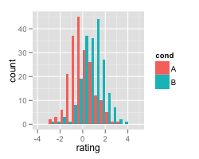 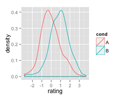 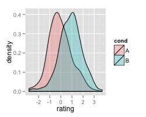
Add lines for each mean requires first creating a separate data frame with the means:
# Find the mean of each group library(plyr) cdf <- ddply(df, "cond", summarise, rating.mean=mean(rating)) # cond rating.mean # A -0.05775928 # B 0.87324927 # Overlaid histograms with means ggplot(df, aes(x=rating, fill=cond)) + geom_histogram(binwidth=.5, alpha=.5, position="identity") + geom_vline(data=cdf, aes(xintercept=rating.mean, colour=cond), linetype="dashed", size=1) # Density plots with means ggplot(df, aes(x=rating, colour=cond)) + geom_density() + geom_vline(data=cdf, aes(xintercept=rating.mean, colour=cond), linetype="dashed", size=1)
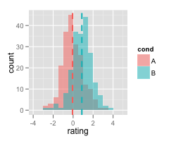 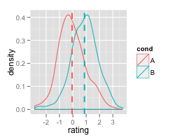
Using facets:
ggplot(df, aes(x=rating)) + geom_histogram(binwidth=.5, colour="black", fill="white") + facet_grid(cond ~ .) # With mean lines, using cdf from above ggplot(df, aes(x=rating)) + geom_histogram(binwidth=.5, colour="black", fill="white") + facet_grid(cond ~ .) + geom_vline(data=cdf, aes(xintercept=rating.mean), linetype="dashed", size=1, colour="red")
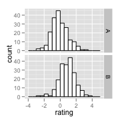 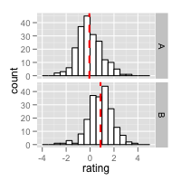
See Facets (ggplot2) for more details.
Box plots
# A basic box plot ggplot(df, aes(x=cond, y=rating)) + geom_boxplot() # A basic box with the conditions colored ggplot(df, aes(x=cond, y=rating, fill=cond)) + geom_boxplot() # The above adds a redundant legend. With the legend removed: ggplot(df, aes(x=cond, y=rating, fill=cond)) + geom_boxplot() + guides(fill=FALSE) # With flipped axes ggplot(df, aes(x=cond, y=rating, fill=cond)) + geom_boxplot() + guides(fill=FALSE) + coord_flip()
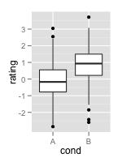 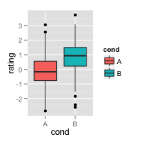 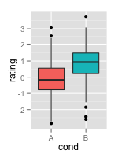 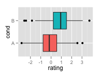
It is also possible to add the mean by using stat_summary.
# Add a diamond at the mean, and make it larger ggplot(df, aes(x=cond, y=rating)) + geom_boxplot() + stat_summary(fun.y=mean, geom="point", shape=5, size=4)
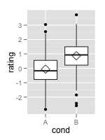